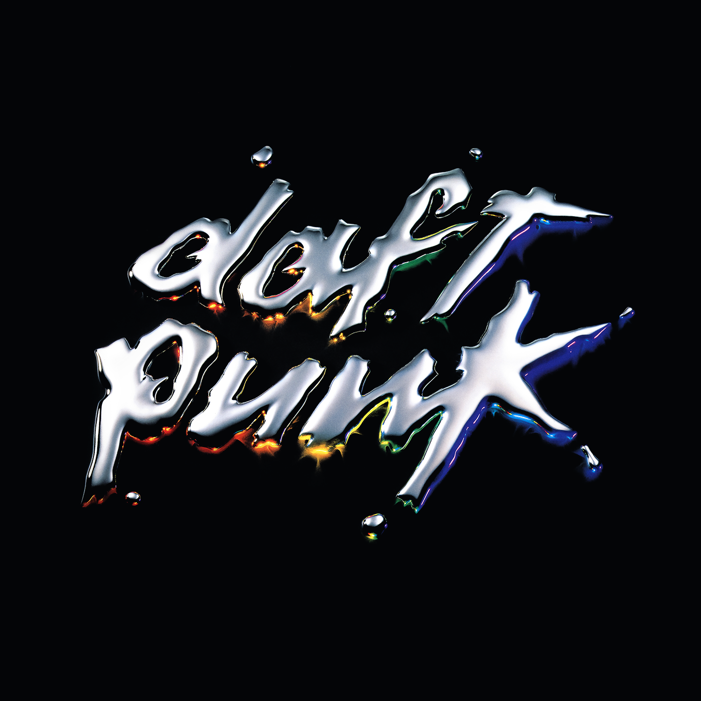

Recognized Samples on Face to Face
Emerging in the 1990s, Daft Punk is a legendary electronic music duo known for their pioneering contributions to the genre. Comprising Thomas Bangalter and Guy-Manuel de Homem-Christo, the French duo gained worldwide acclaim for their innovative sound, blending house, disco, funk, and pop with cutting-edge production techniques. Their music not only pushed the boundaries of electronic music but also paid homage to their influences, reflecting a deep respect for the sounds that shaped their artistry. Renowned for their enigmatic robot personas and groundbreaking live performances, Daft Punk created a legacy that forever changed the landscape of modern music.
Released in 2001, Discovery is a landmark album that redefined electronic music. Renowned for its seamless fusion of house, disco, funk, and pop, the album reflects the duo's deep reverence for their musical influences. Central to Discovery is its intricate use of disco-centric samples, carefully selected from a single transformative decade of music history, reimagined with a futuristic flair. This page delves into the complexity of Discovery, exploring its artistry and the inspirations that fueled its creation.
In music, samples are short snippets of pre-existing audio recordings that artists or producers incorporate into their own tracks. These recordings can come from a wide range of sources, such as other songs, movies, interviews, or even everyday sounds. The process involves cutting, looping, or altering these pieces of audio to fit into a new composition.
Daft Punk extensively used samples on Discovery, transforming snippets of older songs into entirely new compositions. They creatively manipulated these samples—changing tempos, pitches, and layering them with original elements—to craft their signature blend of electronic, funk, and disco.